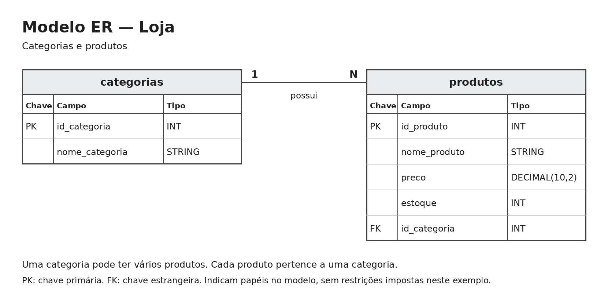

Contextualização do trabalho
Objetivo
Este trabalho demonstra a criação de tabelas e as operações INSERT, UPDATE e DELETE nos formatos Delta Lake e Apache Iceberg, utilizando o Apache Spark por meio do PySpark.
Os dois notebooks utilizam o mesmo cenário e os mesmos registros, permitindo observar como cada formato executa as operações.
Participante
Yasmin Bez Fontana.
Cenário
O cenário representa o cadastro de produtos de uma loja, organizado em duas tabelas:
- categorias: armazena o identificador e o nome da categoria.
- produtos: armazena o identificador, o nome, o preço, o estoque e o identificador da categoria do produto.
Uma categoria pode possuir vários produtos, e cada produto pertence a uma categoria. Essa relação é representada pelo campo id_categoria na tabela produtos.
Modelo entidade-relacionamento

Os identificadores representam os papéis de chave no modelo. Nas tabelas deste exemplo, não foram definidas restrições de chave primária ou estrangeira.
Conjunto de dados
O conjunto de dados foi criado para o trabalho e contém duas categorias, Informática e Papelaria, e dez produtos fictícios.
Os registros são inseridos diretamente por comandos SQL, dentro dos notebooks. Utilizamos os mesmos dados nos dois formatos.
Operações demonstradas
| Operação | Demonstração |
|---|---|
| INSERT | Cadastro das duas categorias e dos dez produtos. |
| UPDATE | Alteração do preço do Mouse para R$ 59,90 e do estoque para 15 unidades. |
| DELETE | Exclusão da Caneta, identificada por id_produto = 4. |
Após a exclusão, permanecem nove produtos.
As consultas antes e depois de cada operação mostram os resultados.
Organização do projeto
Os notebooks ficam na pasta notebooks. A documentação fica em docs, e a imagem do modelo ER fica em docs/assets.
Os arquivos gerados pelas tabelas ficam em data/delta e data/iceberg. Cada notebook possui uma etapa de limpeza para permitir a execução completa do exemplo desde o início.
O ambiente Python é gerenciado com UV, utilizando pyproject.toml e uv.lock para registrar as dependências e suas versões.